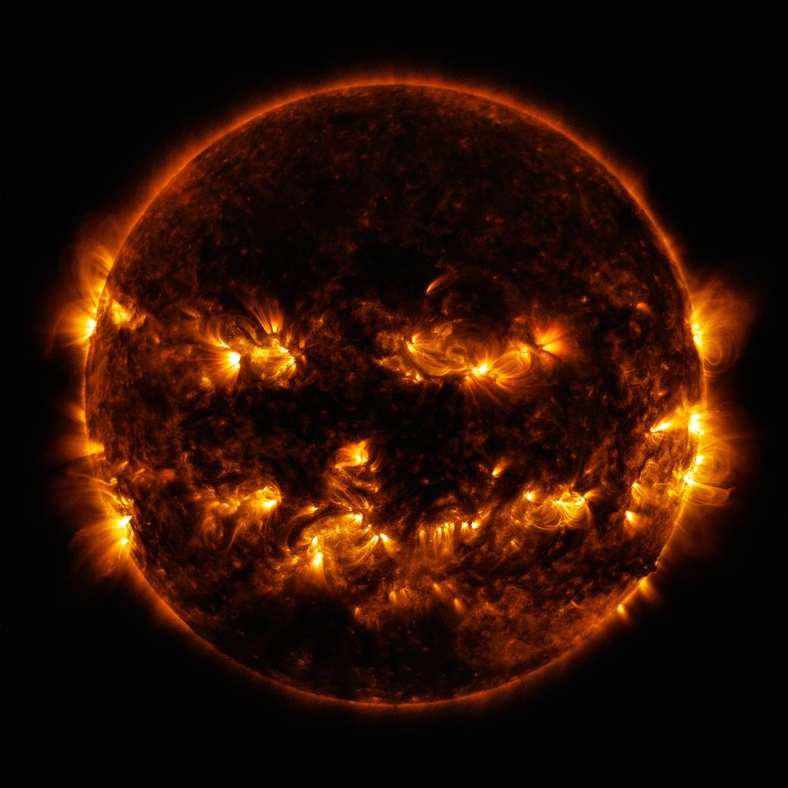
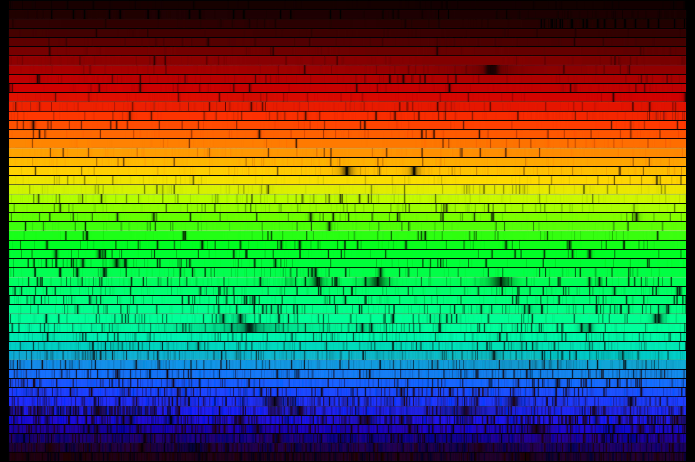
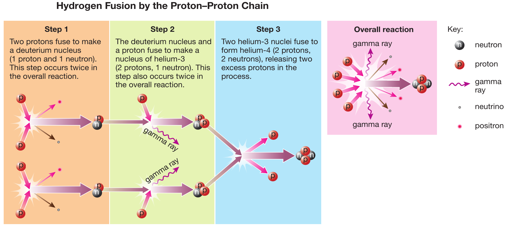
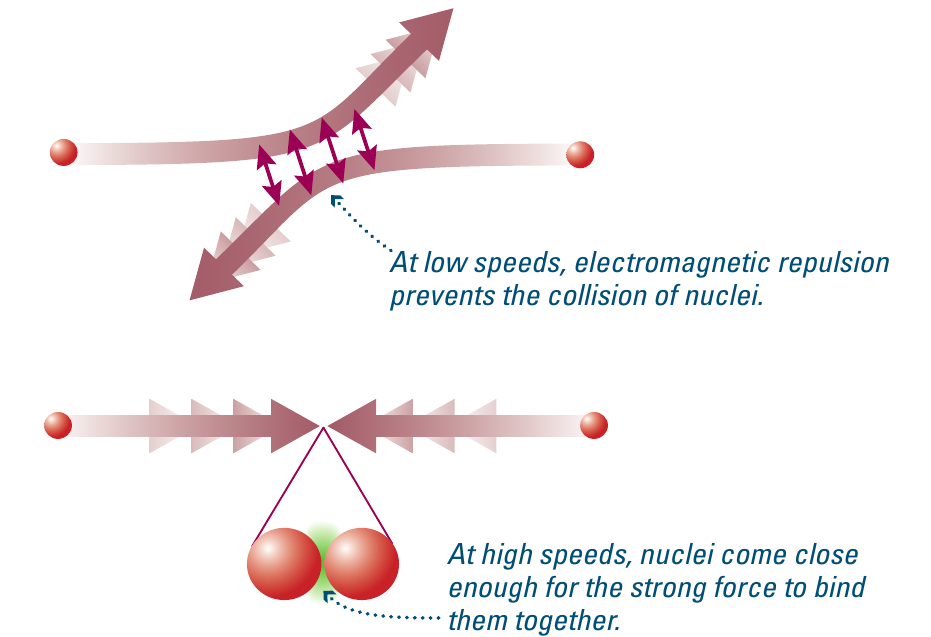
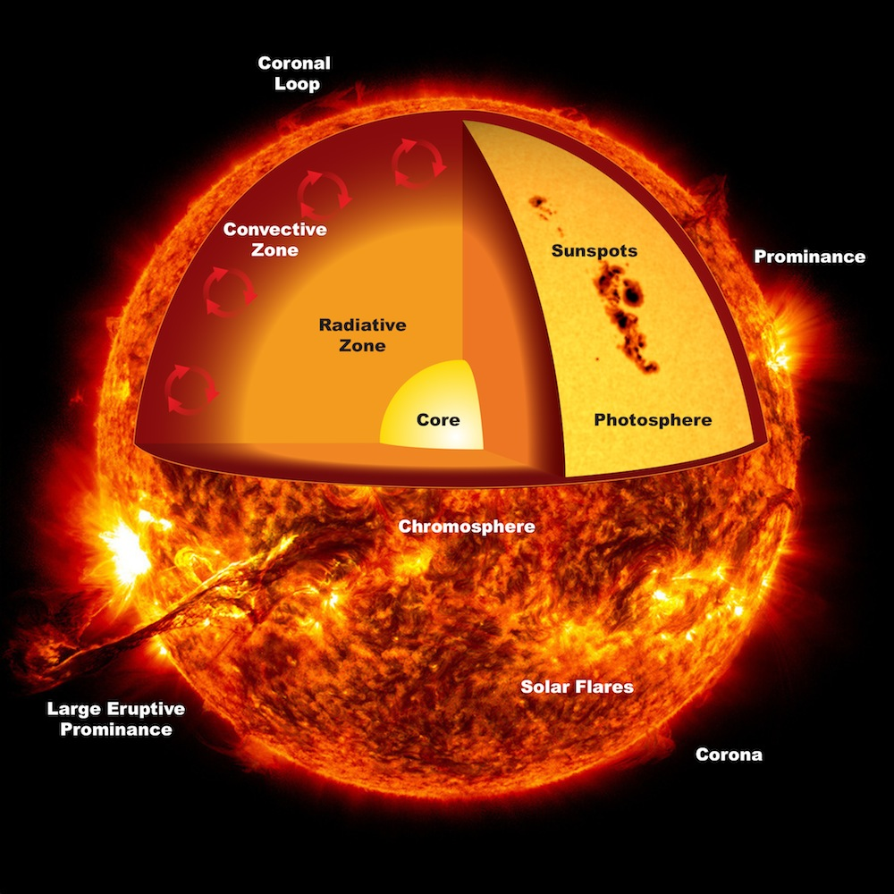
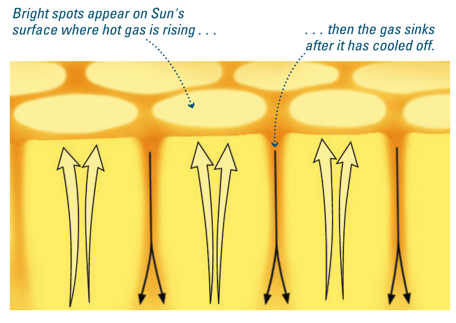
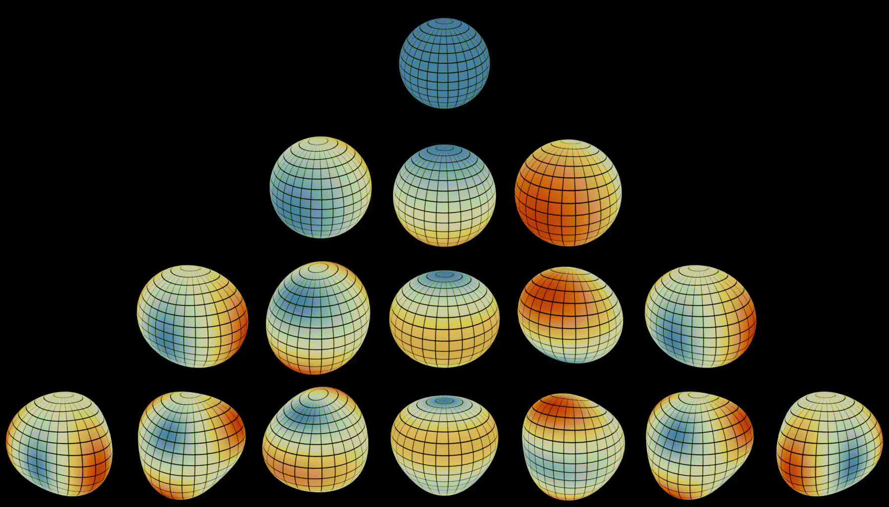
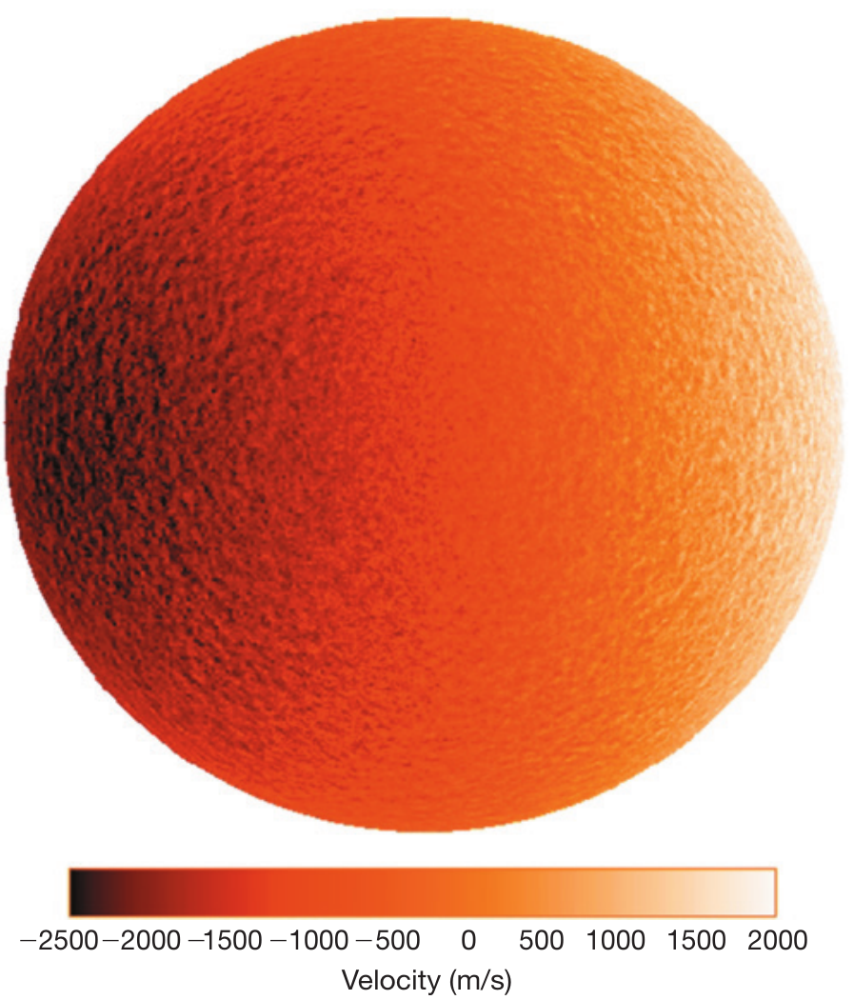

Reading: Chapter 14
Etymologically astro-nomy/physics deals with stars (astrum is star in latin) although in the modern sense, it encompasses all space-related physical processes and sources. Today, we begin talking about the stars, starting from the nearest star to us, the Sun.

What is a star?
We have already seen that until the Copernican revolution and the abandonment of a geocentric theory of the Universe, the Sun (and the Moon) were counted as "planets" because of their non-regular motion on the night sky. However, we now know that the apparent motion on the sky of the Sun is due to the fact that we orbit it, and it physically is a star and not a planet in the modern sense of the term.
In the modern sense, a star is a self-gravitating mass capable of sustaining itself by producing its own internal energy through nuclear physics processes. The objective of today is unpack this definition specifically for the Sun.
N.B.: The understanding of nuclear physics is a 20th century achievement, which started with the discovery of radioactivity by Marie and Pierre Curie, and required the development of quantum mechanics! This definition of star is only \(\lesssim 100\) years old!
Because its not-subtle influence on Earth's surface, every human culture has observed the Sun, and developed mythologies to explain its existence and behavior. However, it is only in the recent past that we have started understanding the interior and evolution of the Sun and stars in general.
Basic properties of the Sun and how we know them
Presumably the Sun, much like planets, is in global hydrostatic equilibrium: if it were not, we would see it change on a dynamical timescale. Using the forces that determine hydrostatic equilibrium (gravity, pressure gradient, and to a smaller extent, rotation), we can calculate the typical timescale for dynamical phenomena to be of order of ∼ hours in the Sun: since it comes back every day reliably, we know it must not be out of dynamical equilibrium.
N.B.: Exactly like we discussed for planets, this implies there will be an internal structure of the star, determined by the dynamic balance necessary for a static equilibrium, and energy transport throughout the star.
We know the surface \(T\simeq 5800\,\mathrm{K}\) of the Sun from its spectrum: its overall shape follows a black-body ideal emitter spectrum (except for the absorption lines), whose peak frequency only depends on \(T\). Since energy has to flow from the bulk of the volume to the surface, and (thermal) energy flows from hotter to colder regions, we can reasonably assume that the Sun's interior is going to be hotter.
At these \(T\) the collisions between molecules/atoms due to their thermal motion are energetic enough to break them: most matter is going to be in the form of an ionized plasma.
Composition

Cecilia Payne-Gaposhkin's PhD thesis in 1925 (only about 100 years ago) realized that the bulk of the mass of stars is made of Hydrogen and Helium. The key insight was that it doesn't take much of an element with many lines for it to imprint a strong signal in the spectrum: the most prominent lines do not indicate the elements that are most present by mass, but just those that have more transitions available in the visible spectrum. Instead, most of the mass is in light elements, unlike the rocky planets.
At the time, initially, famous astrophysicists (e.g., Russell!) rejected this idea: dominant paradigm was that there is no particular composition difference between the Earth and the Sun (something that reads absurd now after discussing solar system formation). We now know this is true not only for stars, but for the Universe as a whole too!
Mass
Measuring masses in space is difficult, much more than measuring time! We can leverage Kepler's laws to measure the mass of the Sun from the measure of the year and the knowledge of the Sun-to-Earth distance!
Because the Earth is much less massive than the Sun, \(M_{\rm Earth}+M_{☉}\simeq M_{☉}\), the 3rd Kepler law gives:
where except for the constants, we only need to know the Earth's period and the semimajor axis \(a\). We can even refine this estimate using more than one planet.
N.B.: Measuring time is always easier than measuring distances in astrophysics! Methods that allow to convert time measurements into distance measurements are important tools in every sub-field of astrophysics.
The result is \(M_{☉}\simeq 2\times 10^{33}\,\mathrm{g}\), which is often used as a unit of mass (instead of kg or pounds) for astrophysical objects.
Age
The age of the Sun was the object of a great multi-disciplinary debate in the late 19th/early 20th century, involving biologists, geologists, and astrophysicists.
Biology had just been revolutionized by Darwinian theory of evolution, based on random mutations + natural selection to explain the diversity of life on Earth and the variety of environmental adaptations observed. This process however is very slow (because of the random nature of mutations), and requires a large age for the Earth.
Geology was also developing, and requiring \(\gtrsim\) billion years old planet to explain through erosion and tectonics the features observed on Earth's surface.
Presumably, the Earth is not older than the Sun it orbits, so these arguments putting a lower limit on the age of the Earth also put a lower limit on the age of the Sun.
The need for stellar evolution
However, the Sun obviously shines: this means it loses (internal thermal) energy to radiation at a measured rate of \(L_{☉}\simeq 4\times10^{33}\,\mathrm{erg\ s^{-1}}\). Something comes out: at equilibrium, this means something must go in to have balance! In other words: the fact the Sun is losing energy requires an energy source and sets a timescale for the life of the Sun given by the total energy available divided the energy loss rate, which is its luminosity:
Unless there are sources of energy to "refill" \(E_{\rm tot}\), this sets a maximum lifetime of the star: once all the energy is gone, there is no energy to be lost in the form of a luminosity \(L\), and the star should turn "off"!
In the late 19th/20th century, with a positivism-dominated culture, physicists thought (very wrongly) that they knew almost everything, and would not consider the possibility of refilling \(E_{\rm tot}\) for a star and Kelvin and Helmholtz calculated that \(\tau\sim 15\,\mathrm{Myr}\), much shorter than the Earth's lifetime required by biology and geology. Spoiler: they were very wrong.
This timescale of millions of years is now called the "Kelvin-Helmholtz timescale" or "global thermal timescale", and it is by definition how long a star would live losing all its internal energy at a constant luminosity.
This discrepancy in this multi-disciplinary debate remained unsolved until Hans Bethe in the 1930s figured out that stars can refill their own internal thermal energy (in other words, they can produce their own "heat") tapping in the nuclear energy of the matter in their core!
This elongates the lifetime of the Sun from the ∼ 10s of millions of years predicted by physicists to the billion of years required by geological, fossil, and biological evidence!
However, this process of energy generation requires a slow change in composition in the Sun core: stars must evolve and are not static and immutable objects!
Another key insight is that the evolution is driven by the need to compensate for the surface losses to the luminosity: in other words stars evolve because they are losing energy.
N.B.: They lose energy necessarily to thermal radiation because they have a finite temperature \(T\).
Energy sources
Stars obviously shine. Everything with a finite temperature \(T\) does, stars happen to be hot enough to shine in optical wavelength (some even peak at shorter wavelengths, higher energy: the stars I focus on in my research often peak in the UV!).
A star does not need an energy source to shine: just to not be too cold! However, the timescale arguments above demonstrated that for the Sun to be sufficiently long-lived it needed an energy source.
This means that the Sun does not shine because it has an energy source: it's the opposite! Stars need an energy source because they shine, and something has to compensate the losses!
Radioactivity
To be completely fair to late 19th century physicists, they did try to consider all possible known (that was their mistake!) sources of energy. Radioactive decay, which is a way to tap into the nuclear energy, was considered as soon as identified: however, the composition of the Sun does not contain enough radioactive material for this to be significant, and it only results in a minor increase of the energy budget.
Chemical reaction: is the Sun on fire?
Chemical reactions are a common energy source on Earth: for example, the chemical energy stored in bonds among the electrons of molecules is what powers a fire!
Chemical reactions re-arrange electrons into molecules and tap into the energy stored in this bond, which means the typical energy scale is of electron-volts or less. The number of reactions that would be needed per unit time to power the Sun's luminosity \(L\) is unrealistically high and suggests that chemical reactions have an insufficient energy budget to power stars.
Nuclear reactions
As mentioned above, it took the development of nuclear physics and understanding of the nuclear structure to finally find a reasonable source of energy capable of refilling \(E_{\rm tot}\) at a rate comparable to the losses from the surface \(L\).
Nuclear reactions are of two types:
- fission: nuclear energy is obtained by breaking into pieces larger nuclei. This is the mechanism that generates electricity in a nuclear power plant, where Uranium breaks down in pieces leading to release of energy.
- fusion: we can extract nuclear energy from light nuclei by smashing them together in new heavier nuclei.
The plot below shows on the y-axis the nuclear binding energy for various nuclei. Reactions that release energy (that is exoenergetic) are those that move towards the peak (most bound nucleus, \(^{56}\mathrm{Fe}\)), the difference between the final end-product of the reaction and the initial reacting nuclei times the number of protons/neutrons involved (i.e, \(A\)) is the energy released by the reaction. Because we are now thinking at nuclear scale, the relevant energy scale is the binding energy of protons and neutrons in a nucleus, 106× larger than chemical reactions, in the MeV range!

Because stars are primarily made of light nuclei (H and He), fusion is the dominant energy production mechanism during long-lived phases of stellar evolution.
Specifically, in the Sun's interior, matter is fully ionized, so hydrogen is in the form of loose protons and electrons. The Sun can turn 4 protons into one nucleus of He, but \(m_{\rm He}< 4\times m_{p}\): the mass lost in the conversion becomes thermal energy! The fraction of mass converted in energy is:
However: how often can 4 protons, all charged positively and thus repelling each other electromagnetically, meet in one point? While the back-of-the-envelope calculation above shows that nuclear reactions would be an energetically viable to explain the long lifetime of the Earth (from geology and biology) but it remained physically hard to explain how these nuclear reactions could occur at a sufficient rate.
The key was progressively worked out through the 1920s and 1930s and it is that 4 protons never meet each other at once! Instead, the reaction occurs through intermediate steps that involve catalyst elements (e.g., isotopes of He missing one neutron, Lithium, Beryllium).

Even using catalysts and intermediate steps, the first step is always to smash 2 protons together, so they need to have sufficient energy to overcome the electric repulsion they feel: this energy comes from the thermal energy of the protons in the stellar plasma ⇒ nuclear reactions require high \(T\) ⇒ high average random kinetic energy of the protons. Even then, without quantum mechanics effects (i.e., without accounting for the fact that protons are little wave packets in a quantum field, and they can thus "tunnel through" their repulsion), the Sun would not be hot enough to perform nuclear reactions.

There is another problem: 4 protons (or equivalently nuclei of Hydrogen) have charge \(4e\), and their turn into \(^{4}\mathrm{He}\) that has only charge \(2e\) because it is composed of two charged protons and two neutrons. Where does the charge go?
Charge is another conserved quantity (cf. Conservation laws in physics), the associated symmetry of nature is less intuitive than for conservation of energy (time-translation invariance), momentum (spatial-translation invariance), or angular momentum (invariance under rotation), but it exists: it's called gauge symmetry. So charge needs to be conserved, and the nuclear reaction cannot be just \(4p\rightarrow^{4}\mathrm{He}\).
Applying conservation laws, we can reconstruct the entire overall reaction and thus its energy budget:
where we need to add:
- 2 positrons (\(e^{+}\)): these are the anti-particle of electrons, same mass opposite charge, and they take away the 2 missing charges.
- 2 electron neutrinos (νe): this took a bit longer to be added, but it turns out that in nature the leptonic number (i.e., the number of particles like \(e^{\pm}\)) is also approximately conserved, and so if you produce two anti-particles of leptonic nature (each carrying -1 unit of "leptonic number"), like the two positrons we need to add to conserve charge, then we need to add two neutrinos to balance out the leptonic number.
The positrons released in the core will quickly smash into an electron (the plasma is ionized!) and annihilate into γ-photons, which will immediately interact with the remaining electron: ultimately the positrons deposit thermal energy.
N.B.: given that the annihilation of an electron-positron pair releases at least the rest energy \(mc^{2}\) of both particles, neglecting any other energy they carry, we know the minimum energy of the photons produced by the annihilation is \(\varepsilon = 2mc^{2}\) (\(e^{+}\) and \(e^{-}\) have the same mass) so we can calculate their frequency \(f= \varepsilon/h = 2mc^{2}/h\) and knowing the electron mass is \(m_{e}c^{2}\simeq0.511keV\) we obtain high-energy \(\gamma\) ray photons which are immediately thermalizing (i.e., being absorbed and depositing their energy) within the stellar plasma.
Stars don't shine because they burn, Stars burn because they shine!
When we say "burn" what we mean is not a chemical reaction like in a fire, but nuclear burning, rearranging protons and neutrons in a lower energy configuration to extract from their configuration energy to balance the losses at the surface.
Since the nuclear burning is a consequence of the energy loss at the surface (and not at all its cause: planets with no nuclear reactions also shine in the IR!), stars are self-regulated thermonuclear reactors!
Lose too much energy (e.g., increasing \(L\)), and the star will contract (≅ fall on itself), some of the gravitational potential energy will go into thermal energy (i.e., increase the temperature \(T\)), and thus increase the energy release by the nuclear burning (increasing the chances of reactions) until it again matches the energy losses.
Viceversa, decrease the energy losses (e.g., decrease \(L\)), then a temporary excess energy release by nuclear burning in the core will result in expanding the star (like heating up a balloon makes the air expand: that is how we can fly air ballons). But expansion without heat exchange leads to adiabatic cooling (blow on your hand and move it away from your mouth: farther the gas has expanded more and its colder): the temperature \(T\) would decrease and so the energy generation rate.
Structure of the Sun
So we have seen that for the Sun to exist as long as the Earth, it needs an energy source, which turned out to be nuclear energy. To harvest it, the star needs very hot central temperatures, much higher than its surface: nuclear burning happens only in the innermost parts, and energy needs to be transported from the central inner regions to the surface where it can leak out.

We have already seen the energy transport mechanism in planetary context, and they remain the same in stellar context:
- conduction, which is usually subdominant in stars like the Sun
- radiation, which dominates in the core of the Sun
- convection: the outer layers of the Sun are convective. Unlike a pot of boiling water that is convective because of the fast heating at the bottom, the convection in the Sun's envelope it's because at the top of the Sun the temperature \(T\) is low enough that molecules and even H- ions form, and these are very good at stopping photons (the process is exactly the same as we discussed for the greenhouse gases in planetary atmospheres!).
The movie below shows real observations of the Sun: we see at the surface the granularity due to convection:
Remember that the thermal radiation depends only on \(T\), and hotter \(\Leftrightarrow\) brighter: we can see the convective flow with net zero mass flux and non-zero energy flux!

Interior of the Sun
We can only see the outer atmosphere of the Sun, through thermal photons produced in the interior that filters through the (by definition) partially transparent outer layers. How can we know about the interior structure?
Helioseismology
Much like Earthquakes probe the interior of the Earth (the propagation of waves through the interior produces signals in seismometers all over the globe that together tell us something on the interior structure), we can use "star quakes" to study the interior of stars. This was (as many stellar-physics things) first done with the Sun which is close-by and can be resolved (i.e., it occupies more than one pixel on a camera! or to say it better, it's image on the focal plane is much larger than the typical point-spread-function of a telescope!), in that case we typically talk about helio-seismology.
"Star-quakes" can be cause by different kind of waves, depending on the structure of the star:

Capturing the subtle variations in the appearance of the Sun due to these waves is a direct constrain on the internal structure.

Computer simulations
Another method (which is the main technique I use in my research) is to use computer models to solve the equations that describe a star. The video below shows a series of complicated plots (we will discuss some of these in the coming lectures) produced by a computer simulating an in-silico model of the Sun:
A star is big (there is a lot of stuff) and many physical processes play a key role (we have already discussed nuclear physics, neutrino physics, hydrodynamics, etc.!), so these simulations can only be done assuming spherical symmetry, even if stars are not perfectly symmetric.
Neutrinos
The neutrinos produced in the star will leave the star unimpeded: unlike photons, neutrinos interact extremely weekly with matter. Through nuclear reactions and thermal processes the Sun produces a flux of neutrinos such than on Earth there is about a billion of them per second per cm2: in other words, every second, about a billion neutrinos cross one of your fingernails. Most traverse you (and the whole Earth) without any interactions. Matter is almost fully transparent to neutrinos (not quite: we can detect them, but it's extremely hard!). Catching them is hard, but possible, and if we do, we can learn something directly about the stellar interior.
The 2026 Nobel prize in physics to Francis Halzen was awarded for the development of neutrino detectors which require 1 km3 of ice to work!
Solar neutrinos
Astrophysics pushed us beyond the standard model of particle physics.
we have detected solar neutrinos (even confirming directly nuclear reactions in the Sun)